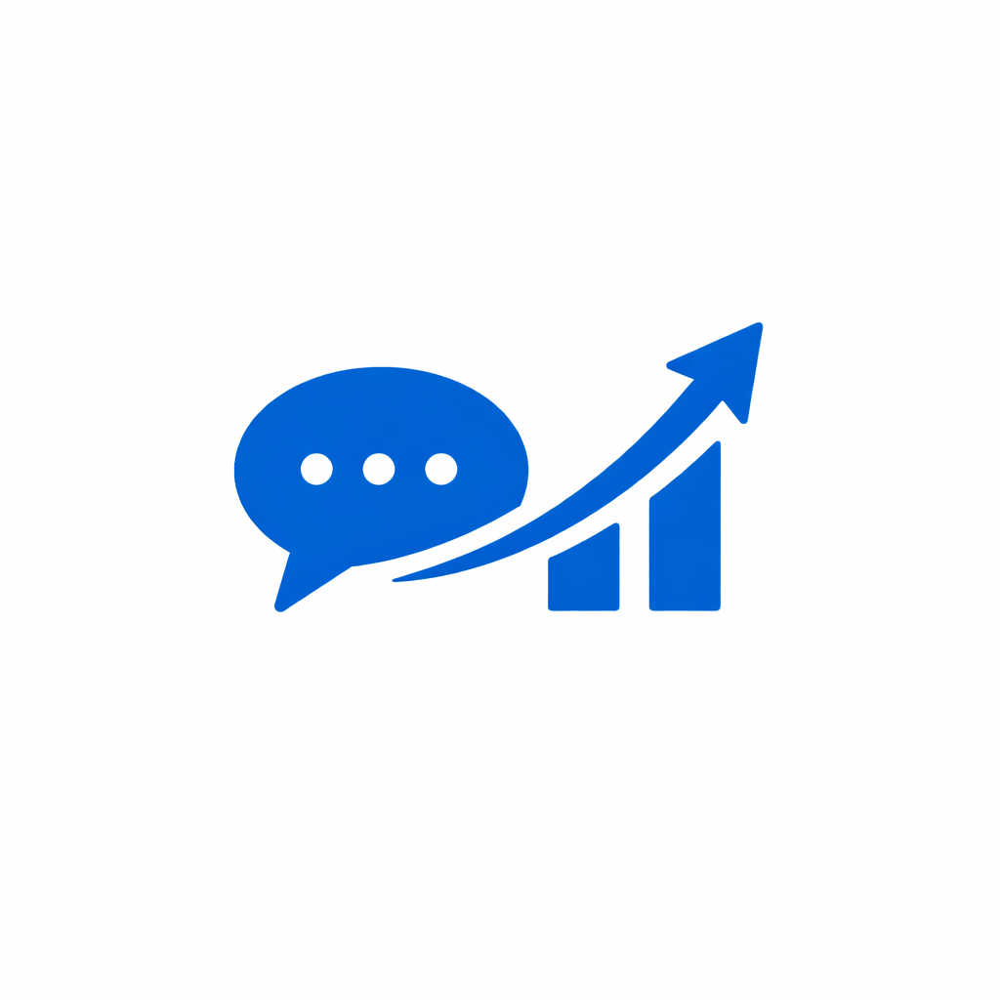
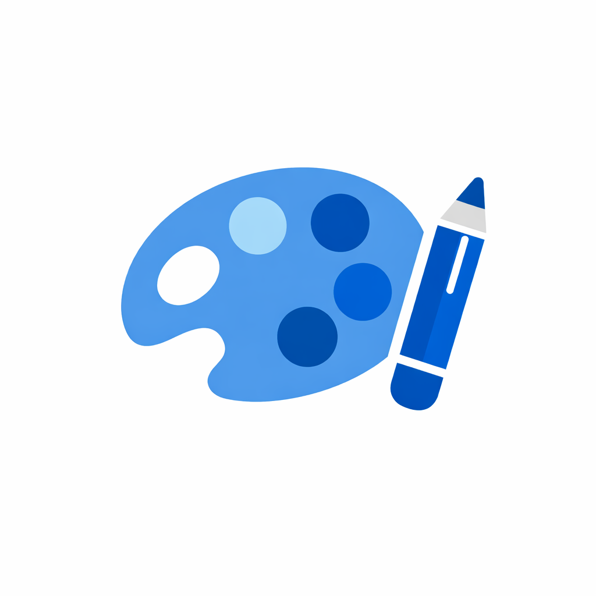

Full‑stack разработчик и дизайнер, который превращает идеи в эффективные цифровые продукты.
Нанять меняЯ занимаюсь разработкой и дизайном более 5 лет, работая как с небольшими стартапами, так и с крупными компаниями. В каждом проекте я ищу баланс между эстетикой и функциональностью, основываясь на данных и психологии восприятия.
Мой путь начался с увлечения веб‑технологиями ещё в университете. Со временем я освоил полный стек разработки: от создания пользовательских интерфейсов до построения архитектуры на серверной стороне. Опыт работы в командах разного размера помог мне выработать гибкий подход и способность говорить на языке бизнеса.
HTML5, CSS3, JavaScript, React, Vue, адаптивная верстка

Node.js, Python (Django/Flask), REST API, базы данных

Figma, Adobe XD, анимации, дизайн систем
Мой подход строится на внимании к деталям, понимании аудитории и постоянном экспериментировании. Я верю, что хорошо продуманный опыт пользователя и эмоциональная связь с продуктом определяют его успех.
Готов обсудить вашу идею и предложить лучшее решение.
Связаться